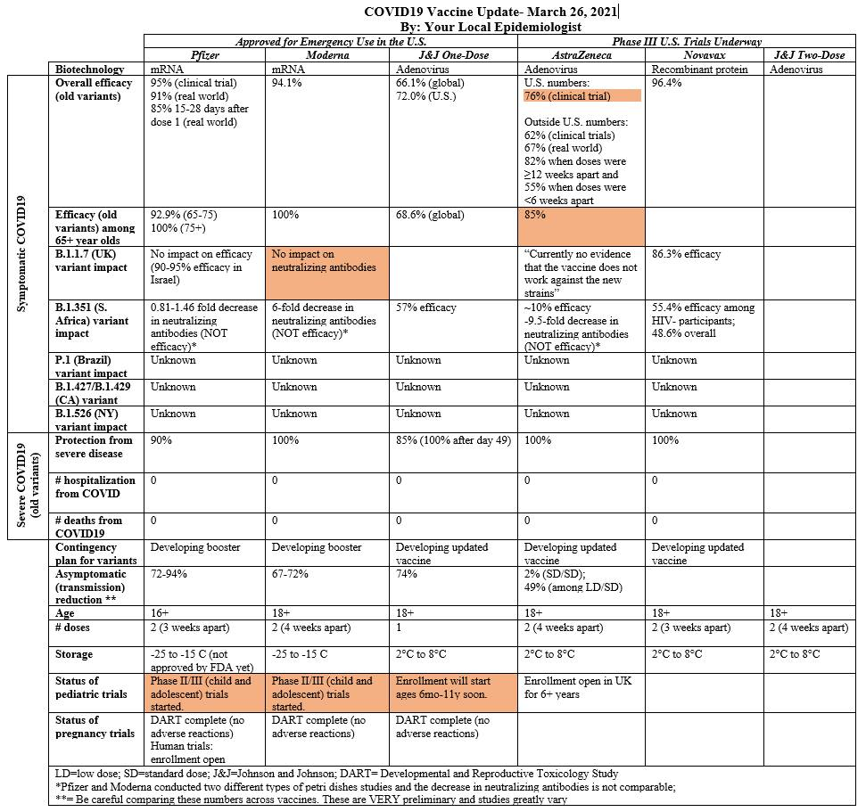

Vacinacao¶
Plano de vacinacao PT¶
- plano vacinaco (19 paginas): https://www.sns.gov.pt/wp-content/uploads/2019/06/PlanoVacinacaoCovid_19.pdf
- apresentacao task force (32 slides): https://www.sns.gov.pt/wp-content/uploads/2019/06/ApresPlanoVacCovid19_FrancoscoRamos.pdf
- apresentacao infarmed (12 slides): https://www.sns.gov.pt/wp-content/uploads/2019/06/ApresPlanoVacCovid19_RuiSantosIvo.pdf
- VACINAS PARA A COVID-19: Desenvolvimento, aprovação e acesso
sumario: https://www.sns.gov.pt/noticias/2020/12/03/covid-19-plano-de-vacinacao/
Reportagem CBS 60 minutos¶
Excelente reportagem da CBS sobre a logistica de distribuicao da vacina, liderada pelo especialista militar do aprovisionamento nos EUA:\
https://www.cbsnews.com/search/?q=warp+speed
Comparacao com portugal, ver aos 25m:\
https://www.rtp.pt/play/p6690/o-ultimo-apaga-a-luz
"uma task force de 12 entidades 'e um dia bem passado" -> "task force da task force" -> "comissao de inquerito" -> "alto comissario"
Passaporte Covid¶
Sobre o "passaporte" covid, vejo comentadores na TV que não dizem o mais importante: o certificado FACILITA a viagem ao DISPENSAR o teste. E' tudo.
Informação da fonte:
"Os cidadãos ainda não vacinados poderão viajar para outro país da UE?
Sim. O Certificado Verde Digital deverá facilitar a livre circulação na UE, mas não será uma condição prévia para a mesma"
Seguranca das vacinas¶
O assunto do dia e' a segurança das vacinas.
Da astrazeneca houve 37 casos de trombose/embolia em 17 milhões.
Isto e' a prevalência normal de tromboses na população. Não e' causado pela vacina.
E' mais provável serem atingidos por um raio no próximo ano: https://www.cdc.gov/disasters/lightning/victimdata.html
Se todos os 10M portugueses tomassem esta vacina (2 doses) iamos ter 43 casos no TOTAL. Em Janeiro morreram 300 POR DIA.
A explicação é que as pessoas teem imensa dificuldade em comparar percentagens derivadas de numeros muito grandes. Pelo que ficam agarradas aos números absolutos pequenos, que compreendem melhor. Se não querem tomar a vossa vacina, em particular da astra zeneca, sff dêem o meu nome!
Comparacao das 5 vacinas¶
"your local epidemiologist" 'e uma pagina no FB que recomendo. Informacao directa de Ciencia explicada de forma simples.
https://yourlocalepidemiologist.substack.com/about
Em particular manteem actualizado esta tabela comparando as vacinas das diferentes marcas: 